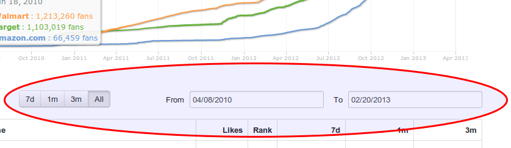

Indiana Jones and the Single Source of Truth
Data Models for Javascript Apps
Translation
Booton = Button
Business requirements
- Allow selection of date ranges with from and to fields.
- Display Range selection buttons.
- Display the range button as pushed if the range is selected.

Goals
- Create decoupled, easily changeable apps
- Create reusable components
- Make it easier for the team to work on a code base and understand each other's work
The first solution...
jQuery all the things!
A first implementation
Define Markup
<div id="widget1" class="widget">
<input class="from" type="text" value="01/01/2013" />
<input class="to" type="text" value="02/31/2013" />
<button class="month">Month</button>
<button class="week">Week</button>
<button class="all">All</button>
<br/>
<button>Show current range</button>
</div>
Capture DOM elements/events
// repeat for each range: all, month, week
$buttonMonth = $widget.find(".month")
$buttonMonth.on "click", (ev) ->
$buttonMonth.addClass("selected")
$buttonWeek.removeClass("selected")
$buttonAll.removeClass("selected")
$from.val(monthAgo); $to.val(max)
Capture Widget State
$buttonProfit.on "click", (ev) ->
range = $widget.find("button.selected:first").attr("class")
alert(range)
End Result
Oh no...
- The buttons are not synchronized with the inputs
Iteration #2: keeping everything in sync
syncButtonsAndInputs = () ->
$buttonMonth.removeClass("selected")
$buttonWeek.removeClass("selected")
$buttonAll.removeClass("selected")
$buttonAll.addClass("selected") if $from.val() == min and $to.val() == max
$buttonMonth.addClass("selected") if $from.val() == monthAgo and $to.val() == max
$buttonWeek.addClass("selected") if $from.val() == weekAgo and $to.val() == max
$buttonMonth.on "click", (ev) ->
$from.val(monthAgo); $to.val(max); syncButtonsAndInputs();
$from.on "keyup", syncButtonsAndInputs
$to.on "keyup", syncButtonsAndInputs
End Result
But...
- The widget state is scattered across different DOM elements.
- Still no single source of truth
An alternative solution: define a data model
class DateSelector
constructor: (@from, @to) ->
@knownRanges =
week: { from: moment(@to).subtract('days', 7), to: @to },
month: { from: moment(@to).subtract('days', 30), to: @to },
all: { from: @from, to: @to }
setRange: (name) =>
@from = @knownRanges[name].from; @to = @knownRanges[name].to
inRange: (name) =>
@knownRanges[name].from == @from and @knownRanges[name].to == @this.to
currentRange: (name) =>
for key in @knownRanges
return key if @inRange(key)
Advantages
- A canonical source of information: no more scattering of data on the DOM
- No need to inspect the DOM in order to understand the logic
-
Enables comprenhensive testing since it is so easy to test the data model:
- instantiate object
- call its methods
- set expectations on the results
- Capybara tests are still required but now reduced.
Sample Data Model Test
Run!
dateSelector = new DateSelector("01/01/2013", "28/02/2013")
it "defaults to showing the whole range", ->
expect(dateSelector.currentRange()).toEqual "all"
it "allows changing ranges", ->
expect(dateSelector.inRange("all")).toEqual true
expect(dateSelector.inRange("week")).toEqual false
expect(dateSelector.currentRange()).toEqual "all"
dateSelector.setRange "week"
expect(dateSelector.inRange("all")).toEqual false
expect(dateSelector.inRange("week")).toEqual true
expect(dateSelector.currentRange()).toEqual "week"
Goals
- Create decoupled, easily changeable apps
- Create reusable components
- Make it easier for the team to work on a code base and understand each other's work
Knockout Features
- Declarative bindings
- Automatic UI refresh
- Dependency Tracking
- Templating
Glue code: bind the data model to the DOM
ds = new DateSelector "01/01/2013", "02/31/2013"
$buttonMonth.on "click", ->
ds.setRange("month"); $from.val(ds.from); $to.val(ds.to)
if (ds.inRange("month"))
$buttonMonth.addClass("selected")
else
$buttonMonth.removeClass("selected")
$from.on "keyup", ->
ds.from = $from.val(); ds.to = $to.val(); syncButtonsAndInputs()
Better Glue for defining bindings:
Knockout.JS
var ds = new DateSelector("01/01/2013", "02/31/2013");
ko.applyBindings window.document.getElementByID("widget5")
<div id="widget5" class="widget">
<input type="text" data-bind="{ value: from }"/>
<input type="text" data-bind="{ value: to }"/>
<button data-bind="{click: setMonth }, css: {selected: isMonth })">Month</button>
<button data-bind="{click: setWeek }, css: {selected: isWeek })">Week</button>
<button data-bind="{click: setAll }, css: {selected: isAll })">All</button>
<br/>
<button data-bind="{click: showRange }">Profit!</button>
</div>
Some example tests from monitor-public
describe 'SaveModal', ->
it 'Validates input', ->
user = new MonitorPublicApp.User
server.respond()
saveModal = new MonitorPublicApp.SaveModal(user)
saveModal.currentEntry(' ')
(expect saveModal.errorMessage()).toEqual 'Name must not be blank.'
saveModal.currentEntry('Google')
(expect saveModal.errorMessage()).toEqual 'That name is taken.'
Full Flow Testing
it "Loads a report with saved comparisons and enters and saves a new one", ->
countReport = new MonitorPublicApp.CountReport
server.respond() # Respond with bookmarks
expect(countReport.title()).toEqual 'Comparisons'
expect(countReport.savedStatusMessage()).toEqual 'Save Changes'
countReport.showSaveModal() # Open modal
countReport.saveModal.currentEntry('NewEntry') # Doesn't already exist
expect(countReport.saveModal.isInvalidInput()).toBe false
countReport.saveModal.onAction() # Trigger save action in modal
server.respond()
(expect countReport.user.bookmarks().length).toEqual 3
(expect countReport.title()).toEqual 'NewEntry'
(expect countReport.savedStatusMessage()).toEqual 'Saved!'
(expect countReport.user.viewingSavedBookmark()).toBe true
Other tools that provide 2 way data bindings:

Goals
- Create decoupled, easily changeable apps
Logic and presentation is separated. Is easier to create different views for the same model or add more logic.
- Create reusable components
To reuse a component, create another instance and bind it to the DOM.
- Make it easier for the team to work on a code base and understand each other's work
Removed the need to write tons of boilerplate code.